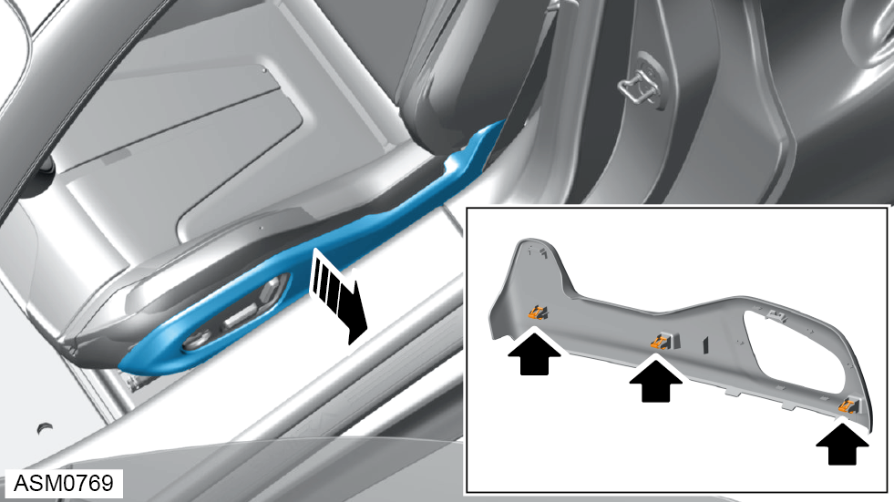
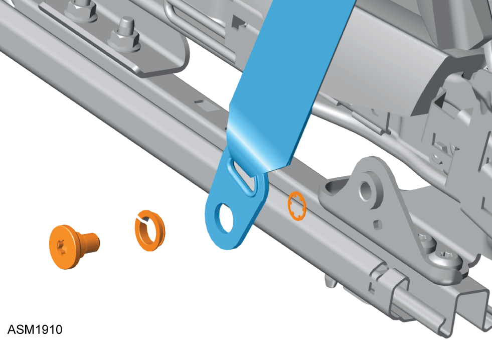
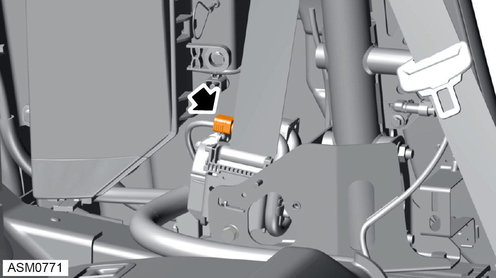
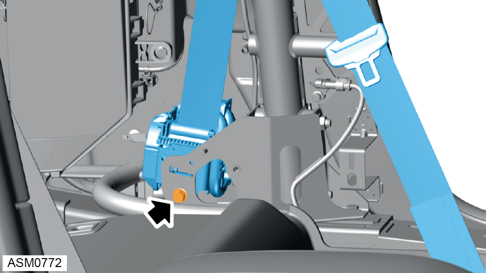

Seat Belt Assembly - Left Side
Print
Operation Code: 13.27.07-02
Removal
- Using seat control switch, move seat fully forward.
- Disconnect battery. Refer to procedure.

- Carefully pull seat side trim to disengage clips (x3) securing trim to seat.
- Slide off cable ties (x4) from trim panel.
NOTE: Do not cut cable ties.
- Remove trim.

- Remove M10x25 bolt, spacer and washer securing seat belt to seat. Torque 45 Nm.
NOTE: Record fitted position of spacer and washer.
- Remove rear quarter trim. Refer to procedure.

- Disconnect harness connector from seatbelt reel.

- Remove M10x25 bolt securing seat belt reel to B pillar bracket. Torque 45 Nm.
- Remove seat belt assembly.
Installation
- Installation is the reverse of removal procedure.